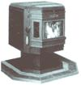

WOODSTOVE SPECIAL
Catalytic combustors, pellet fuel, or just updating your old stove: MOTHER 's guide to the more efficient, environmentally conscious technologies.
IN INVENTING THE WOODSTOVE, BEN Franklin built a freestanding fireplace with an open front and castiron sides. A revolutionary idea at the time, the Pennsylvania Fireplace, as it was called, soon made open fireplaces obsolete, at least in terms of heating efficiency. For about 200 years after that, woodstoves remained basically unchanged. Then along came the energy crisis of the 1970s. Motivated by the shortage and high prices of fossil fuels, Americans turned in droves to wood heat, but all of those puffing flues produced a lot more than energy independence. Scientists soon discovered that wood smoke contains a pharmacopoeia of noxious agents-including formaldehyde, carbon monoxide, hydrocarbons, and polycyclic organic matter-and that woodstoves were spewing millions of tons of these pollutants into the air annually. Some of the compounds were carcinogenic; others caused respiratory problems. And all contributed to a sun-blocking, lung-irritating, spirit-depressing malaise known as winter haze.
Many communities-first in the western mountains but later all across the country-began choking on the seasonal woodsmoke pall. Schools kept kids inside for recess ...neighbors battled neighbors over smoky trespass ...pollution readings became nightly fare on TV weather reports. In some places, regulations prohibited fires during the worst episodes, and a few defiant or careless homeowners got fined for burning wood. One community even put a red light on everyone's fireplace and a temperature sensor in the chimney to warn against and detect illegal wood burning.
By 1986 Oregon had prohibited the sale of the most polluting stoves, and other states began to follow suit. That same year, the federal Environmental Protection Agency (EPA) joined the fray when New York State and the Natural Resources Defense Council threatened to sue the agency for failing to keep the country's air clean. For a time it appeared that the entire woodstove industry and wood-heating way of life might be torn asunder in the battle for clean air.
But where chaos once threatened, order is now rapidly returning. In 1986 the EPA environmentalists, scientists, and state agencies sat down to establish standards for new stoves. They were even joined by the stove industry-in the form of its 800member Wood Heating Alliance (WHA) trade organization. During several months of negotiations, the participants hammered out mutually acceptable rules. EPA regulations now prohibit the manufacture and sale of woodstoves that cannot pass a stringent emissions test (see "Smoke by the Numbers," page 68). Open fireplaces, woodfired boilers or furnaces, and wood cookstoves are exempt from the regulations, but fireplace inserts and "airtight" fireplaces with gasketed doors are included.
Homeowners with old stoves can rest easy, however. "The EPA has no intention of regulating the installation or use of woodstoves," says the agency's Bob Lebens. (States, counties, or municipalities may do so, however.) As of August 1991, 316 different stoves had passed muster with EPA's Phase I standard; of those, 134 already meet the agency's tough Phase II requirements.
The original squawk was centered on the fact that a woodstove pollutes the air when it burns its fuel incompletely and inefficiently, sending unburned gases up the chimney in the form of smoke. These days, to reduce smoke, prevent air pollution, and earn EPA certification (certificates are valid for five years from issue date and may be renewed), stove makers now invariably rely on one of three distinctly different new technologies-catalytic combustors, pellet fuel, or the redesign of existing airtight models.
Catalytic combustors (spin-offs of automobile catalytic-converter technology) are probably the biggest news in wood burning since the match. To date, 167 of the 316 EPA-certified stoves use a catalyst to cut emissions. A typical catalytic combustor is a honeycombed ceramic cylinder about six inches in diameter and three inches high. The surfaces of the honeycomb have been coated or impregnated with a rare metal catalyst, usually platinum or palladium. Inside the stove, the combustor is positioned so that smoke must pass through the honeycomb to escape into the flue.
Smoke consists of combustible gases that will ignite at about 1,000°F. Unfortunately, the fire in most black-box airtight stoves never gets much above 600°F, which means that a lot of pollution and lost energy escape up the chimney. In the presence of the catalyst however, smoke burns at 500 °F instead of 1,000°F.
Once a catalytic combustor reaches its "light-off' point of about 500°F, it continues to burn nearly all the smoke passing through it. The more smoke it consumes, the hotter it gets; and the hotter it gets, the more smoke it consumes. Combustors cruising along at 1,600°F may glow orange with heat. And since the combustor thrives on a diet of smoke, it's permissible-even desirable-for the homeowner to maintain the kind of slow, smoldering fire that would send huge amounts of smoke belching from any noncatalytic stove.
Catalytic stoves have always tested well in the laboratory, but for a time doubts lingered about how well they actually performed in the home. "There's no longer any question about a catalytic stove's ability to greatly reduce pollution," says Skip Barnett, manager of an in-home woodburner study done by Omni Environmental Services, a major stovetesting firm. "In fact, one of the catalytics in our study performed just as well in a home as it had under ideal lab conditions, and that's rather remarkable." Experts now agree that a catalytic combustor in a well-designed stove can reduce pollution from that device by 90%.
Another soldier in the wood-heat revolution is pellet fuel-and the devices that burn it. A few years ago, entrepreneurs in the Northwest began turning waste wood from lumber mills into a new form of pelletized firewood. The pellets consist of wood chips, sawdust, bark, and other scraps that have been dried, pulverized, and compressed into tiny cylinders about one inch long and a quarter inch in diameter. The fuel looks a lot like feed-store rabbit food, and, according to the Association of Pellet Fuel Industries (APFI), a ton of pellets has about the same heating value as a cord and a half of firewood. The fuel is typically sold in 40- or 50-pound bags at an average price of $80 per ton.
Because pellets contain only about 3% moisture (versus 25% or more for seasoned cordwood), they're capable of burning very cleanly-right in a specially designed stove.
Most of them work like this: A hopper near the top of the stove holds about 80 pounds of pellets. An electric auger slowly trickles the fuel from the hopper into a diminutive firebox, where an electric fan forces air into the fire. The result is a small, hot blaze. Another electric fan carries the heat away from the stove and into the room.
The pellet idea smoldered for a while with only regional interest, but in the new era of clean-burning stoves, pellet fuel has really taken off. At last count, about 30 mills in 14 states were making pellet fuel, and about two dozen manufacturers make pellet stoves. Hotbeds of interest are in the Northwest and Midwest, but Vermont, Tennessee, California, and other states also have pellet mills. "Eventually, every community will have at least one pellet-stove dealer, and every grocery store will sell pellets," predicts Larry Roberts, secretary of APFI. "This industry is literally on fire."
Cleanliness is probably the pellet burner's strongest selling point. Combustion in these devices is so complete that often the only flue needed is a small class-L vent (similar to that of a natural-gas furnace). Seven of the 10 cleanest-burning stoves are pellet burners, and two of these emit an incredibly minuscule 0.5 grams of particulate per hour. Electricity use by auger and fans is said to be minimal as well one stove maker compared it to a pair of continuously burring 100watt light bulbs.
Another major advantage of pellet burners is their ease of operation: All a homeowner has to do is fill the hopper with pellets every 15 to 80 hours. Some models even come with a wall thermostat that regulates the heat output. A thermostat helps eliminate the overheating problem associated with wood burning. Even without a thermostat, however, pellet stoves generally provide a very even heat, primarily because fuel is fed into the firebox at a predictable rate.
Pellet burners are not for everyone, however-especially those who treasure the sweaty satisfaction of gathering their own wood. And, of course, the fans and auger make these devices dependent upon electricity. No power means no fire. "You might as well pipe in natural gas," grouses one purist.
The third kind of clean-burning stove is a fine-tuned version of the one you're probably using now. No new fuels or magical catalytic chemistry here. Instead, manufacturers have taken their airtight models and tinkered and experimented and modified them until the stoves operate at the highest possible efficiency and produce the least possible pollution.
The most common technique is to make the firebox appreciably smaller than those of most airtight stoves, which tends to increase the temperature and ignite more smoke and reduce emissions.
"There seems to be an optimum firebox size of about 1.8 cubic feet," says Steve Crane, of the Oregon Department of Environmental Quality (DEQ). "Stoves larger than that are likely to have more emissions, and smaller stoves are not as convenient to use." Many of the cleanestburning stoves of this type do, however, have fireboxes smaller than 1.5 cubic feet.
Manufacturers have also lied thoroughly the dynamics of air flow inside the stove. In older stoves, smoke often travels from wood to chimney in pretty much a straight line, which means that a lot of it escapes unburned. By adding baffles, plates, and secondary air inlets at strategic spots, stove makers create extra turbulence inside the firebox. And when smoke churns around inside a stove, it's more likely to get burned.
Another ploy is to increase firebox insulation, usually with additional or more-heat-resistant brick. This can boost the stove's internal temperature and cause more smoke to ignite. A few stove manufacturers also make their devices "foolproof" by making it impossible for a homeowner to close the draft past a certain point.
All of these machinations can reduce emissions. Many of the high-tech, noncatalytic stoves (as they're called) have met EPA standards, but they generally come in behind catalytics and pellet burners in the pollution-reduction race. Sometimes they have other drawbacks as well: The small firebox size means frequent feeding and ash removal; all-night burns are largely a thing of the past; and too much insulation on a stove can send valuable heat up the chimney instead of into the room. As a result, few of these devices could be considered convenient whole-house heaters.
In addition to being technically difficult, reducing woodstove pollution can be expensive. High-tech, noncatalytic models start at about $600, and the most pricey pellet burner tops out at about $2,300. Catalytic stoves fall somewhere in between, but catalytic combustors must be replaced after about 12,000 hours of use at a cost of $30 to $100. Most high-quality EPA approved stoves, regardless of technology, cost between $750 and $1,400.
"EPA's involvement in all this probably adds about $200 to the cost of a catalytic stove and $120 to a non catalytic," says the agency's Bob Lebens. However, some of that extra expense may come back to the homeowner via less-frequent chimney cleanings and reduced firewood consumption. Good catalytic stoves, for example, have been known to cut wood use by 30%.
"In the long run," says Lebens, "a clean-burning certified stove may actually be cheaper than one that is initially less expensive." In addition, the EPA predicts an annual reduction of $1.3 billion in health costs and property damages resulting from exposure to wood smoke.
If you'd like to step with just one foot-and less expense-into the new age of wood burning, you can do so by modifying your present stove. A device called the Collins Hopper-complete with bin, auger, and fanturns almost any black-box stove into a pellet burner. Hoppers sell for about $600.
To go catalytic, you can install in your lower flue one of the several add-on catalytic combustors, devices that have been around for several years without really catching on. "Maybe that's because most of them make the flue look like an ostrich that has swallowed a baseball," jokes Dave Collier, a stove-certification analyst with the Oregon DEQ.
But what of wood burning's ambience? Are the independence, the self-reliance, the cozy glow still intact?
Last winter, the DEQ tested add-on combustors and came away optimistic. "They can't reduce emissions the way a well-designed catalytic stove can, but we were generally pleased with their performance," says Collier. "They seem to be a good idea that hasn't fully developed yet." Catalytic add-ons generally sell for about $250.
The latest woodstove revolution has also changed some of wood-burning's basic tenets and traditions. Pellet fuel, of course, is an entirely new ball game with its own set of rules. The high-tech, noncatalytic stoves often require more frequent attention and shorter logs.
And even if a stove can hold a fire overnight, it's generally considered antisocial behavior these days to burn a slow, smoky fire.
The greatest changes, however, involve catalytics. With these stoves, moisture content and wood species suddenly don't make a difference any more. In fact, wood that is slightly wet often works best because it creates more smoke, which is what catalytic combustors feed on. Really dry wood, on the other hand, may burn too fast and overload the catalyst.
An important note: Burning wood that has been painted, pressure treated, oiled, or impregnated with creosote can destroy the catalytic combustor. So can artificial logs, colored paper, and chemical chimney cleaners. Essentially, the only things that should go into a catalytic stove are natural wood and regular (black and white) newspaper.
And speaking of creosote, its buildup in chimneys and pipes is largely eliminated with the new low-pollution stoves. Reductions of up to 90% have been reported.
Appearance is very much a part of the wood-burning revolution, too. The black box has given way to a dazzling array of more than 700 stove models with sweeping contours, porcelain or ceramic finishes, decorator colors, and chrome, silver, or gold trim. Some look like antiques, others like space-age furniture. One pellet stove comes encased in a brass-trimmed, varnished oak cabinet; another boasts computerized controls. Many new stoves feature glass doors, and most manufacturers have figured out how to keep them free of soot (usually by sending a stream of air over the interior surface).
But what of wood burning's ambience? Are the independence, the self-reliance, the cozy glow still intact? In going from art to science, has wood burning lost its appeal? The answer seems to be a resounding "no."
"Wood heating is alive and well," says Diana Takvam, of the WHA. If anything, the new technology has improved things by removing any guilt that may have existed and by making the appliances increasingly attractive. "The warm, genial ambience of wood heat is still intact," says Takvam. "A wood fire has always been the heart of the home, and that feeling isn't about to go away."
|
 PHOTOGRAPH ? IMAGINE MEDIA SERVICES The Whifield Advantage II-T freestanding stove, from Pyre Industries (Burlington, WA) emits just 1.3 g/hr at 80% efficiency. |
Left: The Destiny pellet stove, from Horizon Research, Inc. Right: The catalytic Defiant Encore, from Vermont Castings (Randolph, VT). |
|